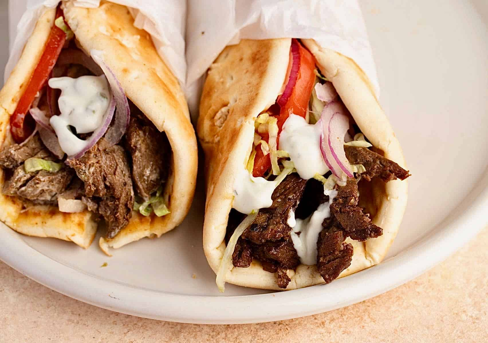

What is the Gyro

Gyros,
sometimes anglicized as a gyro in some regions,
is meat cooked on a vertical rotisserie,
then sliced and served wrapped or stuffed in pita bread,
along with other ingredients such as tomato,
onion, fried potatoes,
and tzatziki sauce.
How did the Gyro come to be

Grilling a vertical spit of stacked meat and slicing it off as it cooks was developed in bursa in the 19th century in the Ottoman Empire.
After the 1922-23 population exchange between Greece and Turkey,
the Greeks brought their variation with them to Greece. Following World War II,
gyros made with lamb was present in Athens. It was likely introduced by immigrants from Anatolia
and the Middle East.
The Greek version is normally made with pork and served with tzatziki, and became known as gyros.
Ingredients
Gyro meat
- 1 lb ground lamb
- 1 lb ground beef, 80/20
- 1 onion, small
- 5 garlic cloves, minced
- 1/4 cup breadcrumbs
- 1 tablespoon dried oregano
- 2 teaspoons ground cumin
Assembly
- 8 pieces of Pita bread, warmed
- 1 cup Tzatziki sauce, homemade or store-bought
- 3 campari or roma tomatoes, sliced
- 1 red onion, thinly sliced
- 1 romaine heart, finely chopped
- 1/2 cup feta cheese crumbles, optional
- hot sauce, optional
Steps to making the Gyro
- Make Gyro Meat (Bake in the morning or day before, if possible): Add onion and garlic to a food processor and very finely chop. Add to a bowl along with the ground meat, salt, pepper, bread crumbs, oregano, cumin, and Aleppo pepper. Use clean hands (or wear gloves if desired) to mix and mash the meat together really well, so it holds together densely.
- Bake: Press meat mixture into a 9 by 5 inch loaf pan. Bake at 325 degrees F for about 50-60 minutes, or until the center registers 165 degrees on a thermometer. Set aside to rest for 20 minutes, and then, ideally, if time permits, refrigerate for a few hours or overnight. (Refrigeration will make the meat much easier to slice.)
- Slice Meat: Remove meat from pan (reserve the fat drippings) and cut into thin strips, about ⅛ inch thick.
- Brown meat: Heat a griddle, cast iron or skillet over medium high heat. Add some of the meat drippings or a little oil to lightly coat the bottom of the pan. Once hot, lay the meat slices flat in the hot pan and cook for just 1-2 minutes on each side, until browned and crisp. (Alternately, you can lay the pieces flat on a lined baking sheet and broil for a few minutes in the oven.)
- Assemble Gyros: Serve gyro meat in a warm pita, topped with tomato, onion, lettuce, tzatziki, and feta.